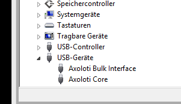

axoloti midiport doesnt show up in device manager....i am on win8.1....
Midi to PC over micro usb doesnt work for me
its called axoloti core, and what your looking for is under sound,video and game controller (this is where windows puts midi devices)
you can see here, I have it and the bulk interface listed in device manager, and you can see that ableton can see it.
if you don't see this, id be tempted to delete the drivers and do a reinstall.
(click on the axoloti device and do remove, and there is an option on the dialog to delete drivers, so do that too... its ok, the drivers will be download from microsoft they are the standard ones, nothing special for axoloti)
(when did you install axoloti... was it within the first few weeks of release? perhaps when the firmware still had a couple of bugs to be ironed out, and a few were trying things with zadig etc to get it working?)
philoop
#3
reinstalled 1.0.6 no change..maybe it has to do with the winusbcompat.zip? but how to install ? in zadig the driver also not appears
johannes
#4
Software re-installation will not affect usb drivers. And the midi port does not require a driver since it is "class compatible". From windows 8 on, there is also no use for winusbcompat.zip.
Could you post a screenshot of the windows device manager - preferably with view->by connection turned on?
The hierarchy where Axoloti shows op "by connection" is something like
ACPI x64 based PC
Microsoft ACPI-compliant system
PCI Express Root Complex
USB Host Controller (there are probably multiple candidates here)
USB Root Hub
Generic USB Hub
USB Composite Device
Axoloti Bulk Interface
Axoloti Core

{kind=link}
johannes
#6
Try to uninstall and delete the driver (in the Windows device manager) for Axoloti Core. Then unplug your board, and plug it in again.
philoop
#7
I did that yesterday, also with system restart, but it didnt help.. this is the only place i can find axo drivers